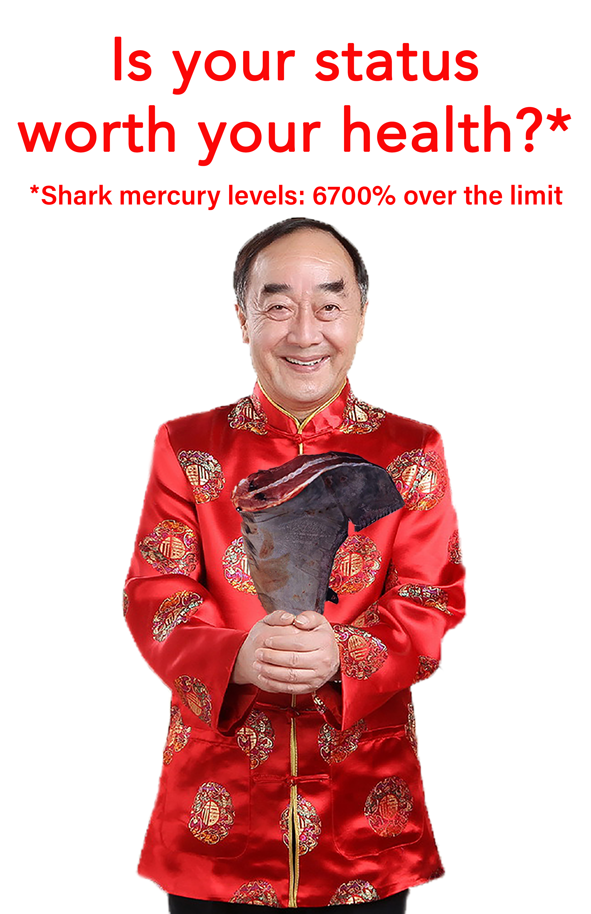
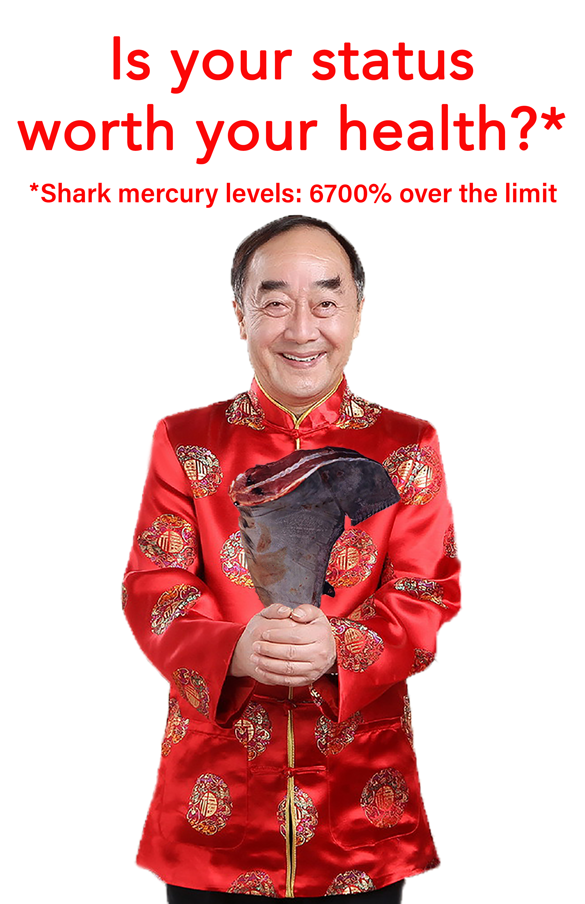

Reframing Shark Fin Soup
Shark fin soup is a traditional Chinese dish that represents wealth in Chinese culture. But sharks are cruelly finned to make this dish, and they also contain high levels of mercury. To change perceptions about shark fin soup, I created a series of posters to advertise the high levels of mercury in sharks. The goal is for the audience to pause and consider whether shark fin soup is really worth eating.


 
